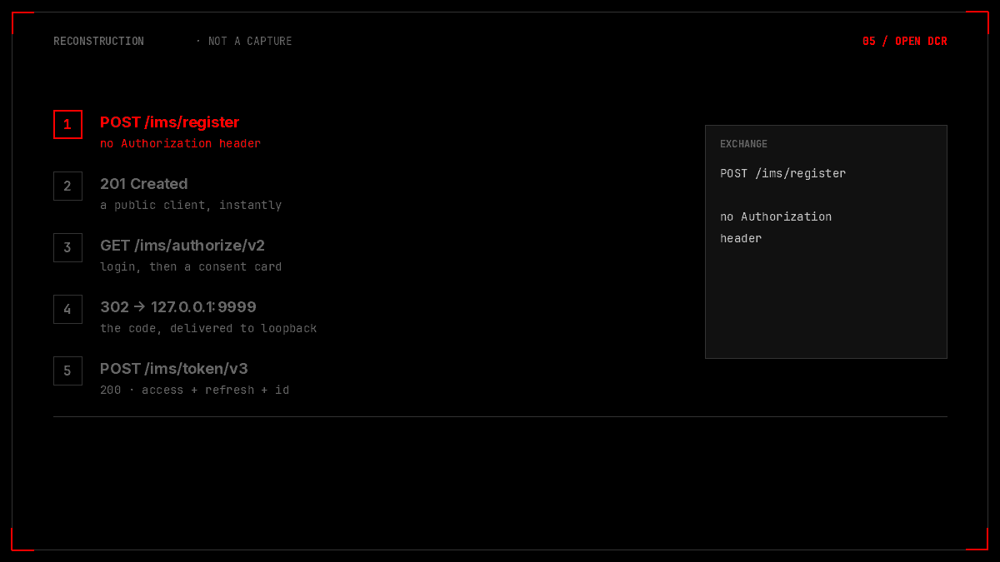
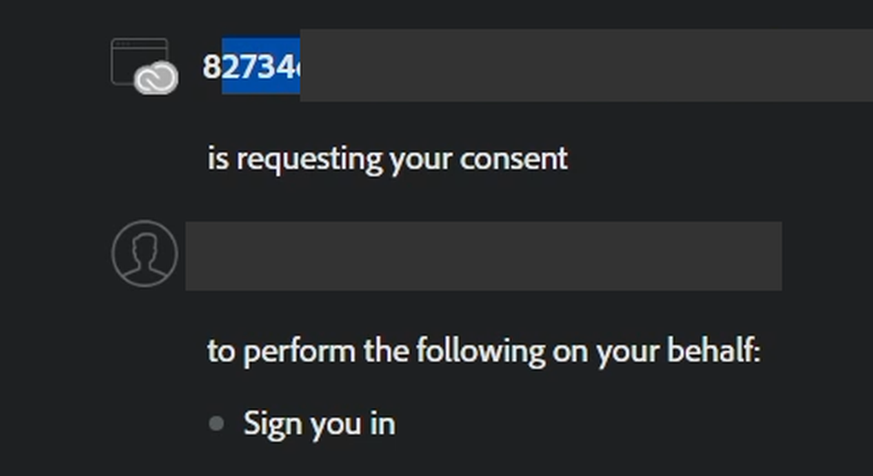
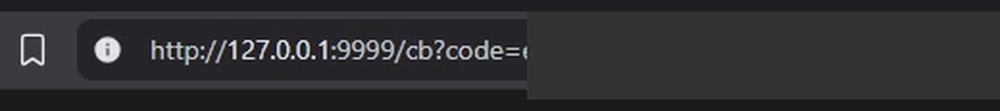
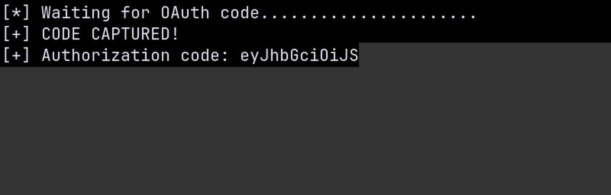
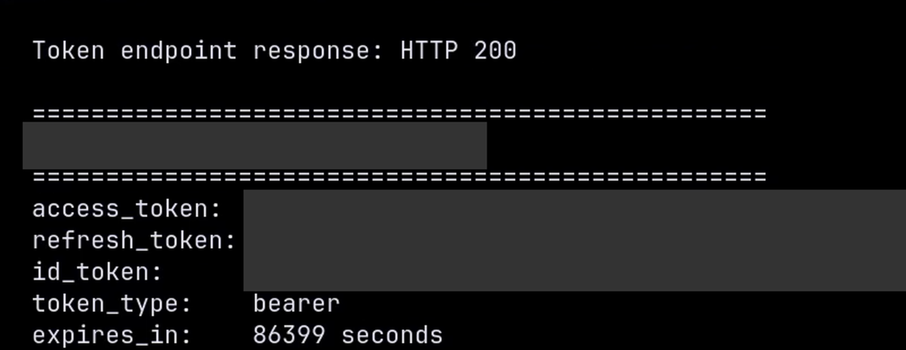

TL;DR
POST https://ims-na1.adobelogin.com/ims/register accepts a JSON body and returns 201 Created with a live OAuth client_id. No Authorization header, no cookie, no developer account, no API plan, no support ticket. Dynamic client registration (RFC 7591) is open to the internet.
The client that comes back is public — token_endpoint_auth_method: "none" — with authorization_code granted, offline_access available on request, and a redirect URI that must point at loopback. That last constraint is what keeps it from being a remote takeover: the authorization code is delivered to a socket on the victim's machine, not the attacker's.
What it does buy, with no user interaction at all, is a working x-ims-clientid header for auth.services.adobe.com/signin/v2/users/accounts — the account-lookup endpoint that otherwise only answers clients Adobe provisioned by hand. One POST replaces a support-approved credential.
And the boundary, stated up front: registration is unauthenticated and enumeration is proven end to end, but I did not demonstrate a cross-user account takeover. The code lands on the victim's own loopback, so catching it needs a foothold on their machine — which is a post-compromise amplifier, not an entry point. The score below reflects that, not the larger number in my own working notes.
client_id tails, the authorization code, the state value, and every token — are masked or truncated. No other user's account appears anywhere in this write-up, and no account was enumerated for publication; the response shape is shown with a placeholder address and the fields that identify a person removed.
PrologueThe card that names itself
An OAuth consent screen is a trust decision rendered as a button. It tells you which application is asking, what it wants, and who is on the other end — and then it asks you to approve. The whole thing rests on the first line: the name.
So when I registered a client against Adobe's identity service and walked it through the flow, the card that appeared said, in the position where the application name goes, 82734d52…. Thirty-two hexadecimal characters. A number where a name should be.
That is not a display bug. The registration request had included a client_name — I had asked for Adobe Creative Cloud Desktop, deliberately, to see what the server would do with a claim like that. The server ignored it and wrote the client_id into the field instead.
Which is the correct thing to do, security-wise: it stops me from dressing a phishing flow in a name the user already trusts. But it also means the card is telling the truth. There is no name to show, because there is no application behind this client, and no person ever approved it. The override that prevents impersonation doubles as proof that the registry has no idea who I am.

127.0.0.1, which is the victim's machine. The values are drawn from the transcript below; the exchange panel and the boundary line are the two things this page is actually about.Chapter 1One POST, no credentials
Dynamic client registration exists so that a client can introduce itself to an authorization server and get credentials without a human in the loop. The specification is explicit that the endpoint is sensitive, and equally explicit that it is the deployment's job to protect it: RFC 7591 §3 offers an initial access token, a pre-registered software statement, or an open endpoint, and leaves the choice to the implementer.
Adobe chose open. This is the entire request:
POST /ims/register HTTP/2
Host: ims-na1.adobelogin.com
Content-Type: application/json
Content-Length: 141
{"redirect_uris":["http://127.0.0.1:9999/cb"],
"grant_types":["authorization_code"],
"token_endpoint_auth_method":"none",
"scope":"AdobeID openid email"}No Authorization header. No cookie. No Origin worth speaking of, no developer-console session, no API key, no plan subscription, no support ticket. And the answer:
HTTP/2 201 Created
Content-Type: application/json
{"client_id":"82734d52…",
"client_id_issued_at":1751… ,
"redirect_uris":["http://127.0.0.1:9999/cb"],
"token_endpoint_auth_method":"none",
"grant_types":["authorization_code"],
"response_types":["code"],
"client_name":"82734d52…",
"scope":"AdobeID email openid"}That client_id is not a sandbox artefact or a stub. It is accepted at the authorization endpoint, at the token endpoint, and at a second host that never appears in the registration flow at all — which is where this stops being an RFC-compliancy argument and becomes a capability.
I ran it sixty-five times while mapping the edge cases, roughly 0.6 seconds apart, and never saw a throttle. Registration is not rate limited in any way I could provoke.
Chapter 2What registration hands back
The interesting part of an open registration endpoint is not that it answers. It is which of your inputs it honours, and which of its own answers it lets you influence. I asked for a few things the fields allow and recorded what came back:
| What I sent | What came back | What it means |
|---|---|---|
"client_name": "Adobe Creative Cloud Desktop" |
"client_name": "<client_id>" |
The name is overwritten server-side. Good control — it removes the impersonation primitive — and it is why the consent card has nothing human to show. |
logo_uri, client_uri, policy_uri, tos_uri, contacts |
Echoed nowhere; absent from the response | The metadata an app would use to look legitimate is not stored, so it cannot be shown. The card cannot misrepresent an app it has no data about. |
"scope": "openid email profile address offline_access" |
All five granted, 201 |
Identity scopes plus offline_access — which is what makes refresh tokens available to the client. |
"grant_types": ["client_credentials"] |
400 — grant type not permitted for DCR |
Machine-to-machine and password grants are explicitly refused. Only the interactive code flow is on offer. |
"token_endpoint_auth_method": "private_key_jwt" |
Rejected | Public clients only. Which is consistent: there is no secret to give you, because there is no approval step to attach it to. |
Read that table as a list of design decisions, because that is what it is. Somebody thought about this endpoint. They decided that a client must not be able to name itself, that it must not be able to point anywhere but loopback, and that it must not be able to ask for a grant that runs without a user present. Those are the decisions of a team that knew exactly what an open registration endpoint exposes.
What they did not decide is who gets to call it.
Chapter 3What the credential unlocks
A client_id that only works at the two OAuth endpoints would be a curiosity. It works at a third host, and that one is not part of the OAuth flow at all.
auth.services.adobe.com/signin/v2/users/accounts is the account-lookup call the login page makes to decide what to show you next. It takes an email address and returns what Adobe knows about the account behind it. Its only authentication is the x-ims-clientid header.
POST /signin/v2/users/accounts HTTP/2
Host: auth.services.adobe.com
Content-Type: application/json
x-ims-clientid: 82734d52… ← the DCR client
{"email":"someone@example.com"}And the shape of a hit, trimmed to the fields that matter and with the identifier-bearing ones removed:
HTTP/2 200 OK
[{"type":"individual",
"status":{"code":"active"},
"hasT2ELinked":false,
"authenticationMethods":[{"id":"password"},{"id":"otp"}],
"images":[{"50":"…removed…"}]}]That is a lot to hand back for one unauthenticated registration. hasT2ELinked is whether a second factor is attached. authenticationMethods tells you whether the account logs in with a password, an OTP, or a SAML redirect to an enterprise IdP. status.code distinguishes active accounts from incomplete ones and ones flagged for a password reset. type separates consumer accounts from enterprise ones.
Read together, those fields sort a list of users by how easy they are to attack: no second factor and password-only is the credential-stuffing pile, redirect is the enterprise-phishing pile, incomplete is the registration-completion pile. Nothing in the response is a secret. Everything in it is a targeting decision.
The no-header control is the part that makes this a finding rather than a public API:
| Request | Response | What it establishes |
|---|---|---|
No x-ims-clientid header |
400 clientId must not be empty: null |
The endpoint requires a client credential |
| Made-up client id | 404 Could not find resource for id … |
Any string will not do; the id has to exist in the registry |
| A client id I registered thirty seconds earlier, unauthenticated | 200 with the account shape above |
The registry entry is the credential, and registration is open |
| Same again after roughly fifteen rapid calls | 429 |
Enumeration is throttled by IP, not by client. A fresh client id does not reset it; a fresh address does. |
The rate limit is worth being precise about, because it is the one thing standing between this and a census. It is per source address, and it is not defeated by registering more clients — I tried. It is defeated by sending the requests from somewhere else, which is a commodity. At commercial proxy scale, the throttle is a cost, not a barrier.
A second host behaves the same way. The staging environment — ims-na1-stg1.adobelogin.com for registration, auth-stg1.services.adobe.com for lookup — accepted a staging-registered client and answered 200 identically. Whatever the fix is, it has to land in both.
Chapter 4The consent card
Now the interactive half. Take the client_id and build an authorization URL. Adobe requires PKCE here — omit code_challenge and the endpoint answers invalid_request — so the request carries an S256 challenge:
GET /ims/authorize/v2?client_id=82734d52…
&response_type=code
&redirect_uri=http://127.0.0.1:9999/cb
&scope=openid+email+AdobeID
&state=<random>
&code_challenge=<S256(verifier)>
&code_challenge_method=S256
Host: ims-na1.adobelogin.comWith no session, that redirects to auth.services.adobe.com/en_US/index.html?callback=… and a login page. Sign in, and the card appears:

client_id. The scopes listed are the identity scopes from the request.Everything about this card is professionally done. It names the requesting party, it enumerates what will be shared, it says who is signed in and offers to switch, and it asks for an explicit approval. It is the kind of screen that gets shown in a security-awareness deck as an example of consent done properly.
The one thing it cannot do is tell you who is asking, because nobody knows. The name field is populated from the registry, the registry has a name only if a human gave it one, and open registration means nobody did. So it prints the identifier. A user is being asked to authorise an application and the only thing the dialog can say about that application is a number.
I want to be careful about how much weight that carries, because "the consent screen looks odd" is not a vulnerability on its own. It is evidence. It is the visible surface of an approval process that does not exist — and unlike an argument about RFC language, it is something a user can see and a triager can reproduce in four clicks.
Chapter 5The code comes home
Approve the card, and the browser is redirected:

127.0.0.1 and the path carries ?code=; everything after it is masked. This single line is the boundary the whole finding lives inside, which is why it gets its own figure.Loopback. The authorization code — the thing that can be exchanged for an access token, a refresh token, and an ID token — has been delivered to a port on the machine that ran the flow. In the test that machine was mine, and a listener I had started was waiting there:

eyJhbGci is the base64 of {"alg":…. The token body is masked; the header is left visible so the format is checkable.It is a JWT, and decoding it shows what it is scoped to: issuer and authorization server ims-na1, the client_id, a user_id, the granted scopes (openid, AdobeID, email), and a creation timestamp. Nothing exotic — a normal authorization code, for a client that did not exist two minutes earlier.
Then the exchange. Because the client is public, there is no secret; the PKCE verifier is the only proof that the party redeeming the code is the party that started the flow:
POST /ims/token/v3 HTTP/2
Host: ims-na1.adobelogin.com
Content-Type: application/x-www-form-urlencoded
Authorization: Basic <client_id>: ← empty password
grant_type=authorization_code
&code=<code>
&redirect_uri=http://127.0.0.1:9999/cb
&code_verifier=<verifier>
HTTP 200 from /ims/token/v3: token_type: bearer, expires_in: 86399. Access, refresh and ID token values are covered with a solid bar. A 200 here is the end of the chain and the best possible evidence that the client is real — a token endpoint that did not recognise the client would have answered invalid_client instead.Twenty-four hours of access, plus a refresh token because offline_access was in the requested scope. For a client that was created by a single unauthenticated POST and approved by one click on a card that could not name it.
Chapter 6Where the chain stops
Here is the part I am not going to dress up. Every step above is real and reproducible, and none of it crosses a user boundary by itself.
The code was delivered to 127.0.0.1 — loopback on the machine running the browser. For this to be somebody else's account takeover, the code would have to land somewhere the attacker can read. The registration endpoint refuses every redirect URI that is not loopback: external hosts, other IP formats, IDN and hex-encoded addresses, data: URIs, fragments, protocol-relative paths, nip.io names, and traversal tricks all come back invalid_redirect_uri. Twenty-three variants, one answer.
So the only ways to receive a victim's code are:
- A listener already running on the victim's machine. That is a foothold the attacker has to have first. Once you can bind a port on someone's host, an OAuth code for their Adobe ID is a nice bonus, not the reason you are there.
- An open redirect on an Adobe domain that preserves the query string and forwards to an attacker host. I looked for one and did not find one; without it, the loopback restriction holds.
- A DNS-rebinding style trick that makes the browser resolve an attacker-controlled name to loopback and then intercept the callback. The registration validator compares the redirect URI as a string and rejects non-literal loopback forms, which closes the variants I tried.
Against a shared machine — a VDI desktop, a CI runner, a shared development server — the loopback redirect is a real hazard, because "the same machine" is exactly the condition the redirect assumes. But that is a same-machine ATO, which is a different and much smaller claim than "any Adobe user can be taken over". The report I wrote for the vendor's internal queue scored it higher than this page does. This page is the honest version.
Chapter 7What I could not break
An open registration endpoint invites the question what else does it let you do, and the answer here is: less than you would hope. Every row below is a thing I tried and could not make work, which is as much a part of the finding as the rows that did.
| Attempt | Result |
|---|---|
Non-loopback redirect (https://example.com, https://adobe.com) | invalid_redirect_uri |
23 redirect bypass variants — traversal, IDN, hex IP, 127.1, 0x7f000001, data:, fragment, nip.io, URL-confusion forms | All rejected |
client_credentials, implicit, password, token-exchange, CIBA, device code | Grant type not permitted for DCR |
Scopes admin, employee, legacy | invalid_scope |
token_endpoint_auth_method: private_key_jwt | Rejected |
Authorize without code_challenge + S256 | invalid_request |
Custom client_name to impersonate a known app | Overwritten with client_id |
Metadata URLs (logo_uri, client_uri, policy/ToS/contacts) as SSRF | Accepted by the parser, never fetched |
The two controls worth crediting are the ones that bound the damage. Enforcing loopback keeps the code out of an attacker's reach, and overwriting client_name keeps the consent card from being a convincing lie. Both are the right call, and both are the reason the score is 6.5 and not something in the nines.
What is missing sits one layer up. Nothing in that list asks should this caller be allowed to register a client at all, and nothing asks should an arbitrary registered client be allowed to call the account-lookup API. Those are the two questions this page is about.
Chapter 8The honest score
CVSS 3.1 · 6.5 Medium — AV:N/AC:L/PR:N/UI:N/S:U/C:L/I:L/A:N.
The vector is chosen to be defensible rather than flattering. PR:N and UI:N are the honest part: the enumeration capability needs no account, no interaction, and no victim present — one POST, one endpoint, an answer about whether an address exists and how it authenticates. AV:N and AC:L need no argument.
The two Ls are where I deliberately did not round in my own favour. C:L because the disclosure is account metadata — existence, type, state, MFA enrolment, method list — and not credentials, messages or content. I:L because the integrity impact is the issuance of a credential that a privileged internal API trusts; nothing was modified in a victim's account. S:U because both the vulnerable component (registry) and the impacted one (account lookup) sit inside the same identity authority. A:N because nothing here denies service to anyone.
The delta from my first pass is worth spelling out, because it is the whole point of publishing a number at all. My internal note scored this 8.6 with S:C and C:H, on the reasoning that a compromised Adobe ID reaches a hundred Experience Cloud products. That reasoning describes the value of the asset, not the impact of this bug. To reach a victim's account from here you need either their machine or an open redirect I could not find, and I did not demonstrate either. So the score dropped, the scope stayed unchanged, and this page says 6.5. If somebody finds the redirect, the same finding re-scores much higher — and that will be a different write-up with different evidence.
Chapter 9The fix
The specification already offers the answer, and Adobe has already made the two harder decisions. Three changes close this, roughly in order of how much they buy:
- Require an initial access token for
/ims/register. RFC 7591 §3 exists for exactly this endpoint. An authenticated IMS session or a pre-issued software statement turns "anyone can mint a client" into "a developer can mint a client", which is what the developer console is for. This alone removes the unauthenticated half of the finding. - Stop trusting arbitrary DCR clients at
auth.services.adobe.com. The account-lookup endpoint should accept an allowlist of first-party, hand-provisioned client ids — not every id in the registry. A client created through dynamic registration has no business asking whether an address is an Adobe account. This removes the enumeration half, and it is the more important of the two, because it does not depend on the registration endpoint being fixed first. - Keep the controls that already work, and audit the registry. The
client_nameoverride and the loopback-only redirect are good decisions; leave them alone. Then go through the existing registry for clients with unusual redirect URIs or unrecognised creation sources, because they have been creatable by anyone for as long as the endpoint has been open. RFC 7592 registration access tokens would make that registry manageable and revocable per client rather than by exception.
None of this is exotic. It is two policy checks and an audit, in a service that already demonstrably knows how to make policy checks — it overrode my app name without being asked.
ReceiptsWhat the claim rests on
| Artefact | What it establishes |
|---|---|
One POST /ims/register with no Authorization header | 201 with a live client_id — no account, no console, no review |
| 65+ registrations at ~0.6 s intervals | No registration throttle observed |
| Scope and grant matrix | offline_access granted; machine grants and admin scopes refused |
client_name override | The name is server-set to the client_id, which is why the consent card cannot name the app |
| Redirect validator, 23 variants | Loopback-only is genuinely enforced, as a string comparison |
| Lookup endpoint, three controls | No header → 400; fake id → 404; DCR id → 200 |
| Lookup rate limit | IP-based 429 after ~15 calls; fresh client ids do not reset it |
| Full flow on my own account | Consent → 302 to loopback → code captured → 200 from the token endpoint |
| Staging twin | ims-na1-stg1 + auth-stg1 behave identically |
| shoo0lin/adobe-ims-open-dcr | Five Ruby harnesses — register, authorize with PKCE, exchange, the single-address lookup gate, and the redirect matrix — plus the redacted fixtures |
The reproducers are public because nothing in them needs a secret: that is the entire finding. Run register_client.rb and you get your own client id; run redirect_matrix.rb and you get the rejected list; run the full flow against an account you own and you get a token. They do not contain an enumeration mode that walks a list, because the useful version of that is the abuse case rather than the evidence — enum_gate.rb takes one address you supply and shows the three response states side by side. If you want to prove the capability is real, one address is enough.
There is a shorter version of this post. It says: a consent screen asked a user to trust an application, and the only thing it could say about that application was a number nobody had ever approved.
OAuth's consent step is a delegation of trust, and it only works if the party being trusted was admitted by somebody. Adobe built a registration endpoint with no door on it, then taught the rest of the system to treat whatever came through as a client. The controls downstream — the name override, the loopback redirect, the PKCE requirement — are all good, and all of them are limits on what a stranger can do after being let in. None of them asks whether the stranger should be inside.
A registry is not an approval. A registry is a list of things that were allowed to happen.
Tested against Adobe IMS production and staging with my own account only. Client identifiers are truncated, the authorization code and every token value are masked, and no account other than mine appears in these captures. The lookup response is shown as a shape with the identifier-bearing fields removed and no real address attached.